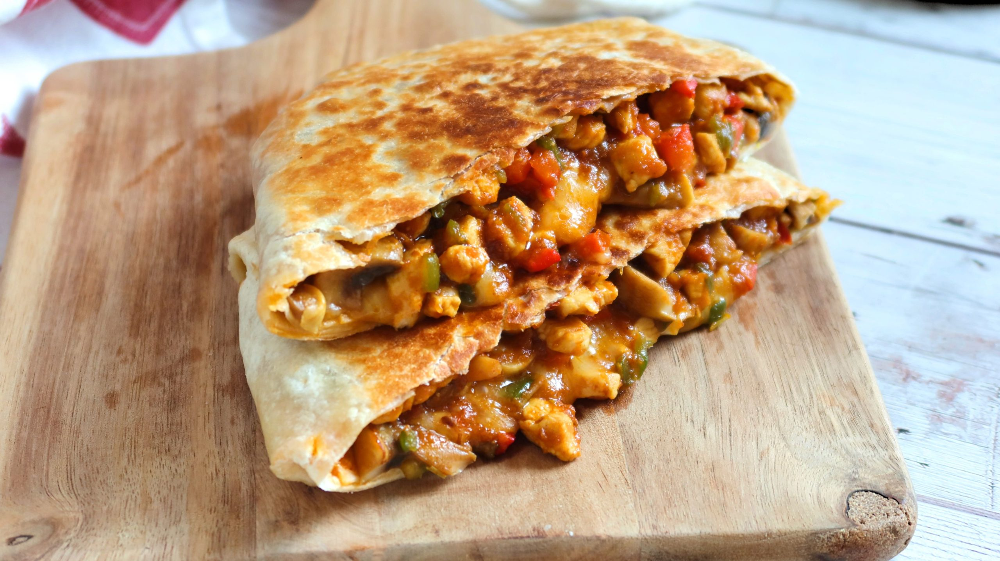
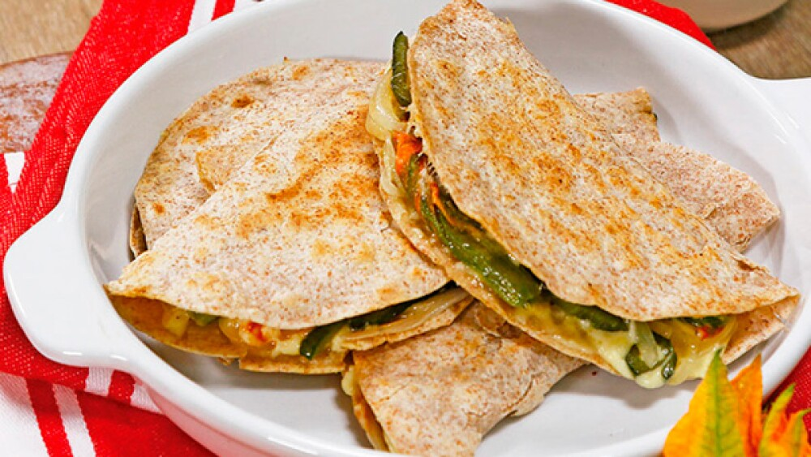

Quesadillas



Ingredientes:
- 4 tortillas de harina (pueden ser de maíz si prefieres)
- 2 tazas de queso rallado (cheddar, mozzarella, Oaxaca o el que prefieras)
- 1 cucharada de mantequilla o aceite
Opcional:
- Pollo desmenuzado, champiñones, jamón, carne, pimientos, espinacas, etc.
- Guacamole, crema agria o pico de gallo para acompañar
Preparación:
-
Preparar los ingredientes:
- Si vas a añadir algún extra como pollo, carne o verduras, cocínalos previamente.
-
Armar la quesadilla:
- Coloca una tortilla en un plato y espolvorea una buena cantidad de queso sobre la mitad de la tortilla.
- Agrega los ingredientes opcionales sobre el queso.
- Dobla la tortilla por la mitad para cerrarla.
-
Cocinar:
- Calienta una sartén grande a fuego medio y agrega un poco de mantequilla o aceite.
- Coloca la quesadilla en la sartén y cocínala por 2-3 minutos por cada lado, hasta que la tortilla esté dorada y crujiente y el queso completamente derretido.
-
Servir:
- Corta en triángulos y acompaña con guacamole, crema agria o pico de gallo.
Variaciones
- Quesadilla completa: En lugar de doblar, usa dos tortillas con el relleno en medio.
- Quesadilla vegetariana: Añade champiñones, espinacas y pimientos.
- Quesadilla de desayuno: Agrega huevo revuelto y tocino.